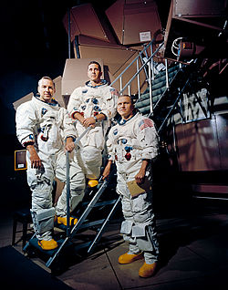
Apolo 8 (diciembre 1968)
Primera misión tripulada en orbitar la Luna. Frank Borman, James Lovell y William Anders tomaron la icónica foto "Earthrise" y probaron la navegación de retorno a la Tierra.
Once misiones tripuladas, seis alunizajes exitosos y doce astronautas caminando sobre la superficie lunar. El programa Apolo no solo cumplió el sueño de llegar a la Luna, sino que transformó nuestra comprensión del cosmos y dejó un legado científico y tecnológico que perdura hasta hoy.
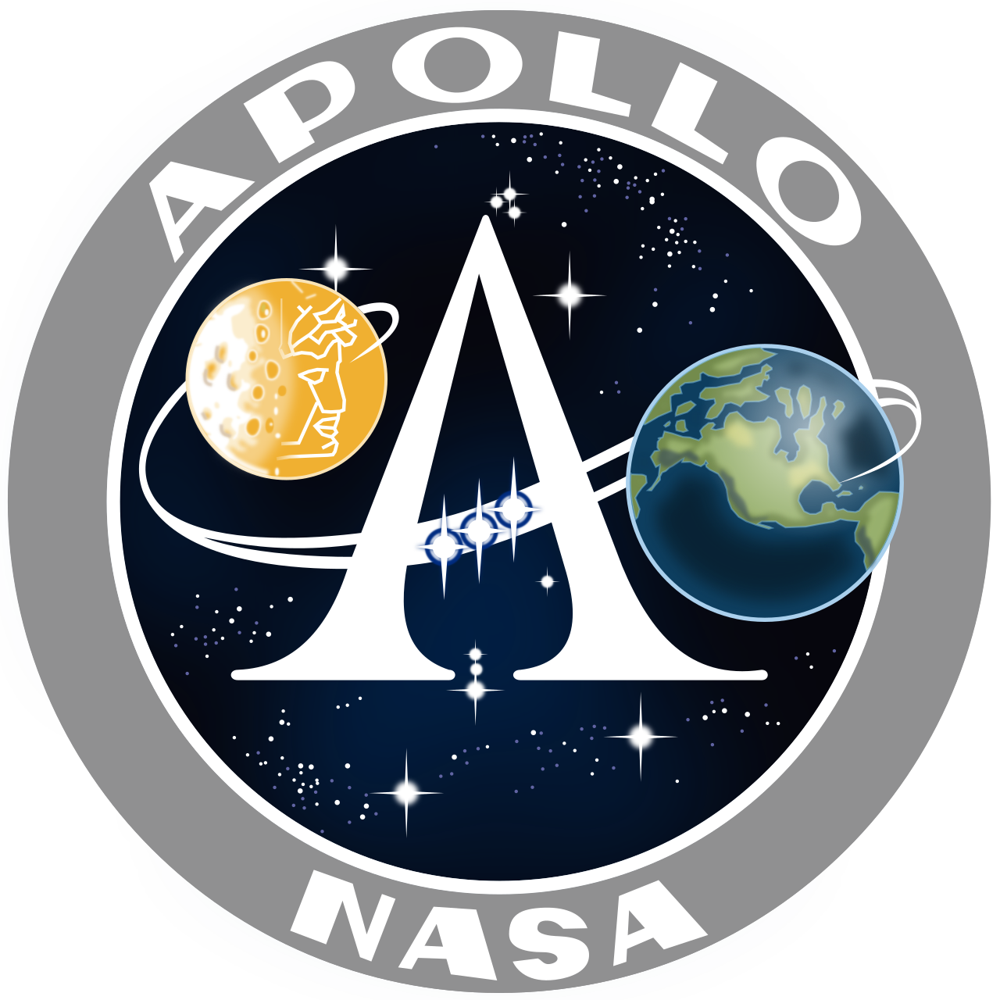
El 25 de mayo de 1961, el presidente John F. Kennedy anunció ante el Congreso el ambicioso objetivo de "llevar un hombre a la Luna y devolverlo sano y salvo a la Tierra antes de que termine la década". Así nació el programa Apolo, impulsado por la carrera espacial con la Unión Soviética. El 20 de julio de 1969, el módulo lunar Eagle (Águila) alunizó en el Mar de la Tranquilidad, y Neil Armstrong dio el primer paso humano en otro mundo. Más allá de la hazaña tecnológica, las misiones Apolo trajeron 382 kg de muestras lunares, instalaron experimentos científicos como sismómetros y reflectores láser, y demostraron que la humanidad podía trabajar en el entorno más hostil jamás imaginado. El programa se cerró prematuramente en 1972, pero su influencia sigue viva en cada cohete que aspira a la Luna, Marte y más allá.
📡 Dato clave: El Saturno V, el cohete que impulsó las misiones lunares, sigue siendo el vehículo más poderoso jamás construido y operado exitosamente. Con 110 metros de altura, generaba 34.5 millones de newtons de empuje.
🔭 Recurso educativo: Consulta el informe completo de la NASA APO-214 — Módulos de comando y servicio, lecciones de ingeniería y protocolos de emergencia (como el rescate del Apolo 13).
🌙 Para reflexionar: ¿Por qué no hemos vuelto a la Luna después de 1972? El programa Artemis planea responder esa pregunta con una presencia sostenible en el polo sur lunar.

Primera misión tripulada en orbitar la Luna. Frank Borman, James Lovell y William Anders tomaron la icónica foto "Earthrise" y probaron la navegación de retorno a la Tierra.
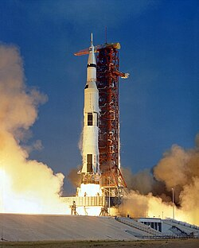
Primer alunizaje tripulado. Neil Armstrong y Buzz Aldrin pasaron 21 horas en la superficie, recolectaron 21.5 kg de muestras e instalaron una bandera y un sismógrafo.
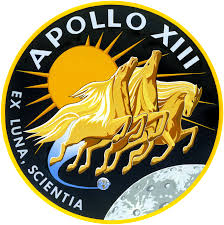
Rescate épico tras explosión de un tanque de oxígeno. La tripulación usó el módulo lunar como "bote salvavidas" y regresó a la Tierra gracias a una corrección manual de trayectoria.
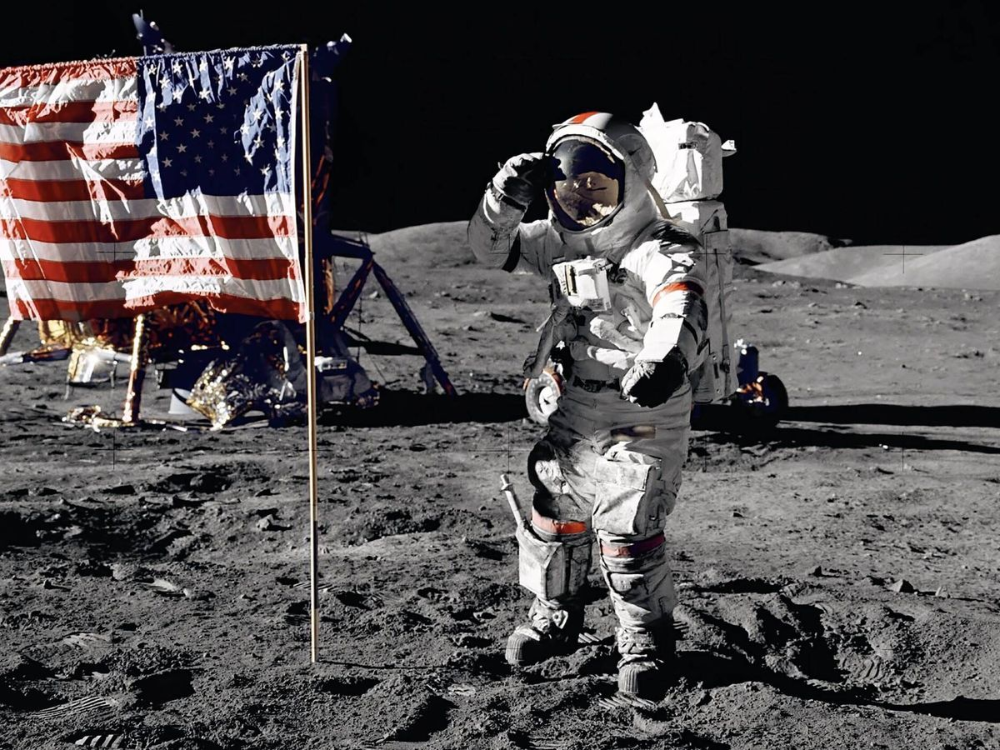
Última misión tripulada a la Luna. El geólogo Harrison Schmitt y Eugene Cernan recorrieron 35 km con el rover lunar y trajeron 110 kg de rocas, récord del programa.
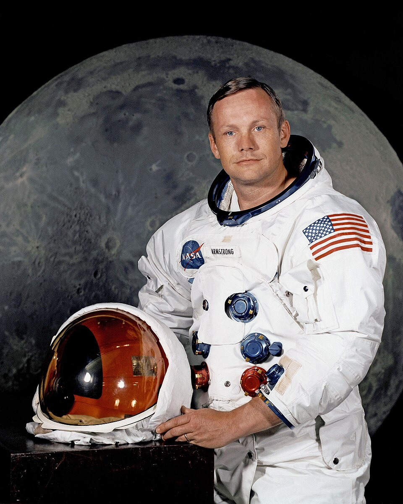
ComandanteIngeniero aeronáutico y piloto de pruebas. Primer humano en pisar la Luna (20 de julio de 1969). Su frase "Un pequeño paso..." marcó un hito en la historia.
 Piloto del Módulo de Comando
Piloto del Módulo de Comando
Piloto del Columbia. Orbitó la Luna en soledad mientras sus compañeros caminaban. Responsable del acoplamiento y la navegación de regreso a la Tierra.
 Piloto del Módulo Lunar
Piloto del Módulo Lunar
Doctor en astronáutica. Segundo hombre en la Luna. Realizó experimentos científicos, instaló el reflector láser que aún hoy se usa para medir la distancia Tierra-Luna.
"Un pequeño paso para el hombre, un gran salto para la humanidad."Neil Armstrong — Apolo 11, 1969
Instantáneas inolvidables del programa Apolo: desde la cabina de mando hasta las huellas selenitas.
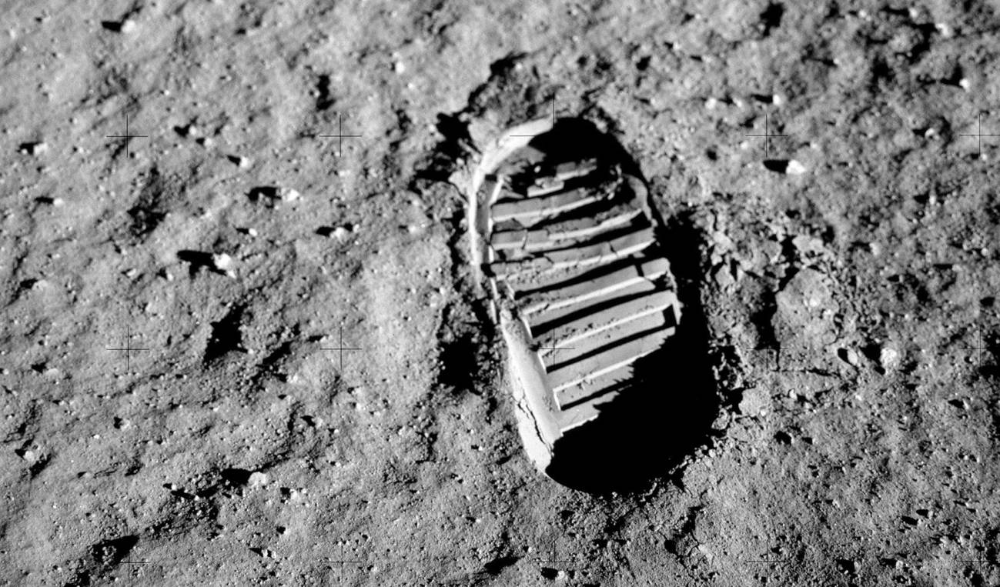


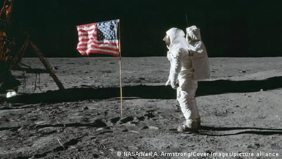
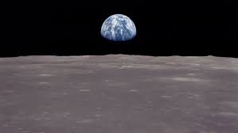
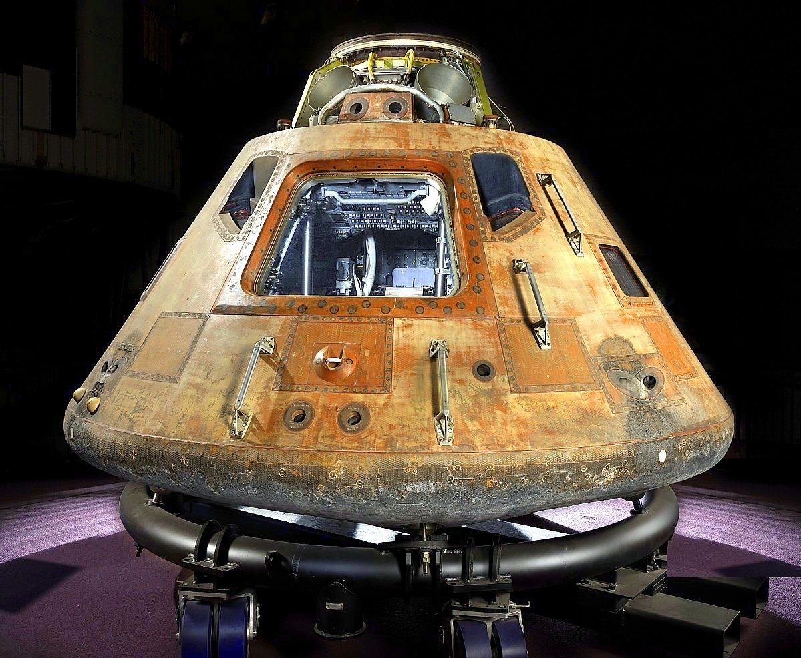
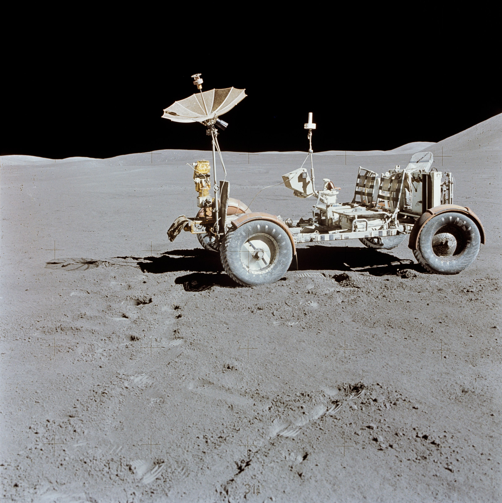
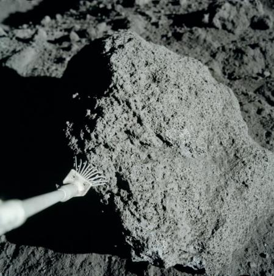
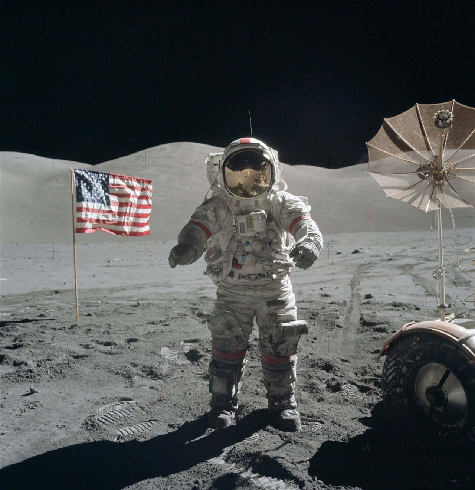
Descripcion corta de la pregunta que abre el foro.
Otro tema en el que los usuarios pueden participar.
Usuario invitado
Un comentario de ejemplo para mostrar como se vera la conversacion.
Explorador espacial
Comentario adicional para simular varias opiniones.